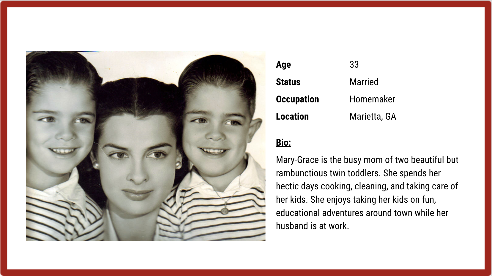

The Varsity
Modern Mobile Application
Agenda
Group Project
Salla Cho
Hayes White
Kah Ong
Widlin Ducatel
Our team was tasked with a design project to help The Varsity to increase their online presence and help reach more customers.
We were given 2 weeks to research and design our solution which after we presented our design process to a neutral audience
Thank you for taking the time to check out our designs.
Research
Because the current website didn't give us much to work with product-wise, we decided to visit the restaurant and do some contextual inquiry about the demographics on the Atlanta Midtown location.
On your regular Thursday noon, this is what we discovered from a sample of 22 tables:
- 10 Families with Kids
- 3 College-aged groups
- 2 Businessmen
- 3 School Groups
This was a great start and gave us insight on how to create our personas later.
But before heading to that direction, we first created some interview questions and a survey in order to really understand what people think about The Varsity and it's current site.

From all the answers we gathered that these above three categories are what we should focus on.
Analyses
Competitive Analysis.
As unique as The Varsity is,
it still has some competitors around Altanta. As a team,
we decided to investigate four different
fast food restaurants with similar products to Varsity's
in order to better understand the website's strenghts and weaknessess. My focus was on Five Guys and their mobile site's strenghts, weaknessess and advantages.
After combining all of our research together we were able to pinpoint the best and the worst qualities of each site.


Wait a second! All of these competitors have huge holes on their mobile sites.
How about their mobile applications?
We started researching this a little closer and found out that they all have mobile applications that are well functioning and thrive on the three categories we earlier looked at during our interviews and survey.
Interesting.
Affinity Mapping
In order to understand if the direction we planned to go toward (re-designing Varsity's website) is beneficial for the company, we started mapping our research results.


The results really confirmed our suspicions: Maybe it's better that instead of modernizing varsity's current mobile site we design them a Mobile Ordering Application.
Good job team!
Now than that's confirmed, lets look at our application's audience.
Personas
As our contextual inguiry of demographics and user interviews leaned toward families and younger people to be most likely to visit The Varsity, we based our personas on those two demographics.
Say hi to Mary-Grace, a busy mom of two beautiful little boys. She has planned a fun day out in Atlanta for her kids, who are now starwing and need a quick meal close by.

How about Benjamin; a young man new to Atlanta, who is excited to see what the town has to offer for a young person with an adventurous mind and loads of student debt.
Synthesis
User Flow
According to our personas I designed two user flows; one for a busy
mom who wants to use a easy to navigate -app to find the nearest restaurant
with quick order for her hungry kids.
Other flow was for a young person, who’s new to town and wants to use an
app to buy something easy and cheap and sign up for possible future rewards.
above: User Flow start
Below: User Flow Continue

Wireframes
- We each first sketched possible examples of homepage.
- We came together to compare our ideas and iterate them further
- After deciding which elements to include on our wireframes, I designed the rest of the pages and started user testings.

Design

Next Steps
- More research and iterations
- Add nutrition facts
- Social media contact
- Group ordering